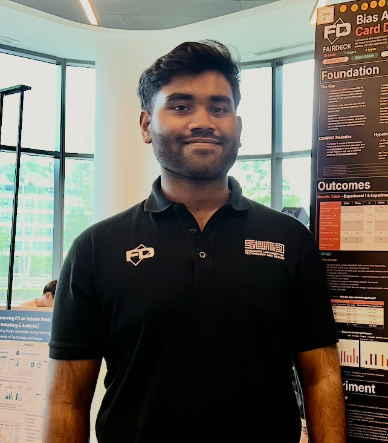

AI • Machine Learning • Responsible AI • Gen AI

MSc Data Science student focused on machine learning, generative AI, responsible AI, financial analytics, and data-driven product design.
Responsible AI bias-awareness system for ML pipeline auditing using a card deck and interactive web application.
Assistive navigation concept for visually impaired users using audio and haptic feedback systems.
LSTM-based financial forecasting system for DBS, OCBC, and UOB using technical indicators and sentiment analysis.
Hackathon project optimizing fleet selection by balancing operational cost, vessel safety, and emissions.
Convex optimization approach for fairness-aware automated resume screening using logistic regression, equal opportunity constraints, and L-BFGS-B optimization.
Compared classification metrics for imbalanced churn prediction using Logistic Regression, LightGBM, and XGBoost.
Built LSTM and GRU models for solar generation and energy consumption forecasting.
AI-powered resume scoring and job matching system using Gemini models.
Created graph database workflows for vessel and supply chain relationship analysis.
Python · Machine Learning · Deep Learning · Generative AI · Responsible AI · TensorFlow · Keras · Scikit-learn · XGBoost · LightGBM · Streamlit · SQL · Neo4j · GCP · Vertex AI · BigQuery · Power BI · Data Visualization · Optimization